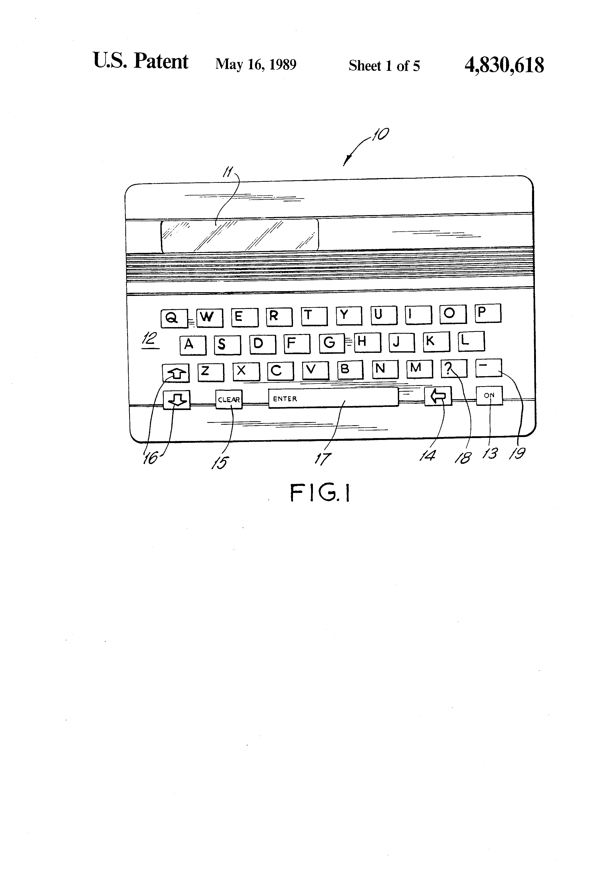

Franklin Spelling Ace
The pocket device that expects you to spell wrong — and fixes your word anyway

Overview
The Franklin Spelling Ace was the world's first electronic speller and the product that created the 'handheld electronic book' category. Franklin Computer Corporation, founded in 1981 by three Philadelphia-area computer professionals (Joel Shusterman, Russell Bower, and R. Barry Borden), had built its business on Apple II clones — until Apple won a landmark copyright suit and Franklin paid $2.5 million, filing for Chapter 11 protection in June 1984. The company emerged in 1985 under new chairman and CEO Morton David with a new strategy: instead of one computer in every home, five small specialized computers in every home. In May 1986 Franklin acquired Proximity Technology, the country's largest supplier of linguistic software, whose CEO Peter N. Yianilos became Franklin's chief scientist. The result, introduced later that year at around $90 retail, was the Spelling Ace: a pocket device with an alphabetical keyboard, an 80,000-word English lexicon, and an algorithm that could correct a misspelling even when the user could not spell the word at all.
The interaction model is the strange part. On a conventional dictionary, you must already know how to spell a word to find it. The Spelling Ace reverses the burden: you type the word the way it sounds — 'fonettickally' — and the machine, applying a correction algorithm that 'considers both typographical and phonetic misspelling,' returns the likely correct spellings, ranked. A '?' wildcard matched unknown letters, and later models added a 'second-guess' key that successively showed words differing in one, then two, positions. Retailers like K Mart and Sears stocked it after the price dropped to $70; Franklin sold more than 800,000 units in the first two years, posting its first profitable quarter since 1984.
Deep dive
The Spelling Ace expects you to be wrong. You type 'definately' or 'fonettickally' and the machine responds not with 'NOT FOUND' but with 'definitely' and 'phonetically'. That inversion — a lookup device whose whole value is guessing what you meant — is the HCI point, on a $90 keychain-sized consumer device in 1986, years before spell-checkers became standard in word processors and two decades before 'did you mean?' became the most-used feature on the web.
Proximity was co-founded in 1979 by Peter N. Yianilos and James H. Simons (who would go on to found Renaissance Technologies). Its contribution was a correction algorithm that modeled both how people misspell (phonetic substitutions) and how they mistype (adjacent keys, transpositions), then ranked candidate words from the Merriam-Webster-derived lexicon. US patent 4,830,618, 'Electronic spelling machine,' explicitly describes the pattern-matching functions: spelling validation, a mode listing all plausible corrections, and 'place indicia' wildcards that check an input word against every dictionary word with variables.
The '?' wildcard and the 'second-guess' key — showing words differing by one character, then two — are a manual version of edit-distance search: the machine relaxes the match one step at a time until the user recognizes the word. That is now a standard interaction in search engines; on the Spelling Ace it was shipped as a physical key labeled for a child.
The Spelling Ace debuted around $90, dropped to $70, and sold more than 800,000 units in its first two years — triggering Franklin's first profitable quarter since 1984 and a commemorated millionth speller on October 6, 1988. The line launched the 'handheld electronic book' category that produced Franklin's electronic dictionaries and the KJ-21 Electronic Bible (1989); by 1998 the company had sold more than 15 million handheld electronic books.
Team & pioneers
- Joel Shusterman, Russell Bower, R. Barry Borden. Founders of Franklin Computer Corporation (1981).
- Morton David. Chairman and CEO from May 1984; led the pivot to handheld electronic publishing.
- Peter N. Yianilos. Co-founder of Proximity Technology; designer of the spelling-correction algorithm; Franklin chief scientist after the May 1986 acquisition.
- Proximity Technology. Linguistic-software company (co-founded 1979 with James H. Simons) acquired by Franklin in 1986.
- Merriam-Webster. Licensor of the 80,000-word lexicon.
Media

Sources
- FundingUniverse — Franklin Electronic Publishers, Inc. company history
- Yianilos — The Franklin Spellers (archived)
- Yianilos — About Proximity and Franklin (archived)
- Wikipedia — Franklin Electronic Publishers
- US Patent 4,830,618 — Electronic spelling machine (Google Patents)
- The Ledger — Spelling Ace Is Great Tool for Kids (2008 retrospective)